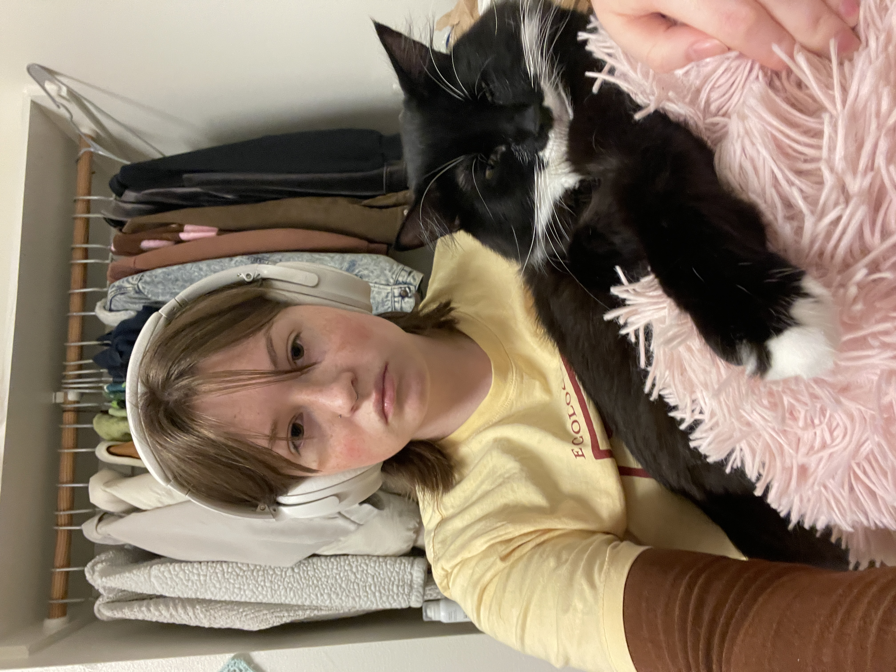

Rory's Homepage

Lab 2: HTML and CSS
Lab 3: File Structure and File Transfer
Lab 4: Pseudocoding and Problem-Solving
Lab 5: Data Types and Variables
Lab 6: Arrays and Objects
Lab 7: Functions
Lab 8: Anon Functions and Callbacks
Lab 9: Libraries and JQuery
Lab 10: JavaScript for the Web
Lab 11: JQuery Events and Forms
Lab 12: Conditionals
Lab 13: Loops
Lab 14: Debugging Tools and Strategies
Lab 15: AJAX
Lab 16: JSON and APIs
About Me
I am a 3rd year sociology major and I am originally from Los Angeles. I have a super cute emotional support tuxedo cat, and I always carry LOTS of photos of her. I like crocheting, sudoku, and playing uno with my friends.